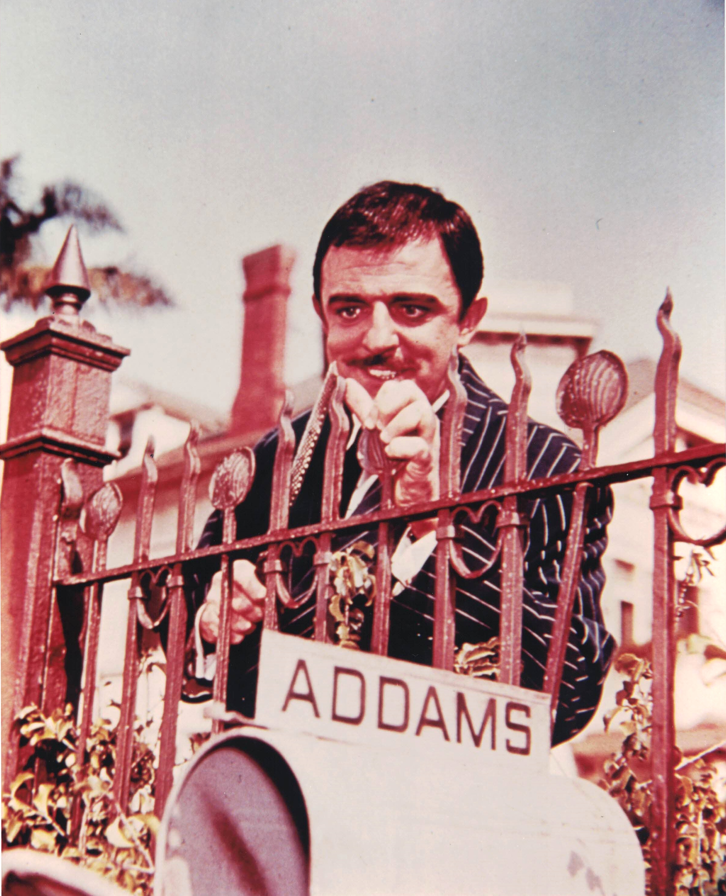

Product No. HEC-0058
$17.99
Shipping: $8.95
Description
8x10 color photograp as Gomez Addamd
Full Description
John Astin is an American actor and director best known for portraying Gomez Addams in the classic television series "The Addams Family." Born March 30, 1930, in Baltimore, Maryland, Astin developed a career spanning television, film, theater, and voice acting. Astin became a television icon as the enthusiastic, romantic, and eccentric Gomez Addams opposite Carolyn Jones as Morticia Addams. "The Addams Family" originally aired from 1964 to 1966 and became a lasting favorite in syndication, helping make Gomez one of Astin's signature roles. He also appeared in numerous films and television programs, including "West Side Story," "That Touch of Mink," "Move Over, Darling," "Freaky Friday," and "National Lampoon's European Vacation." His television credits include guest appearances on "Batman," "Murder, She Wrote," "Night Court," and many other series. Astin also portrayed the Riddler on "Batman" after Frank Gorshin temporarily left the role, giving him another connection to 1960s television pop culture. In addition to acting, he worked as a director and became involved in teaching theater and acting. With a career extending across many decades, John Astin remains especially associated with "The Addams Family" and the character of Gomez Addams. His autographs, photographs, and memorabilia remain popular with collectors of classic television, comedy, and 1960s entertainment.
Condition
Excellent condition